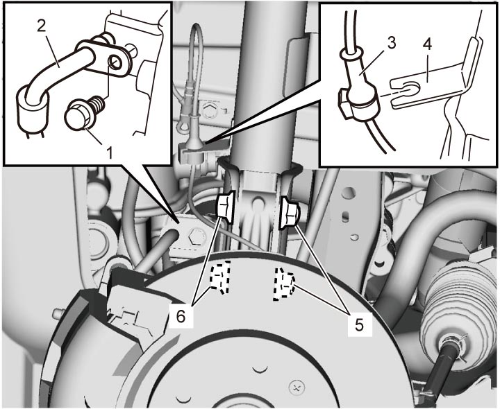
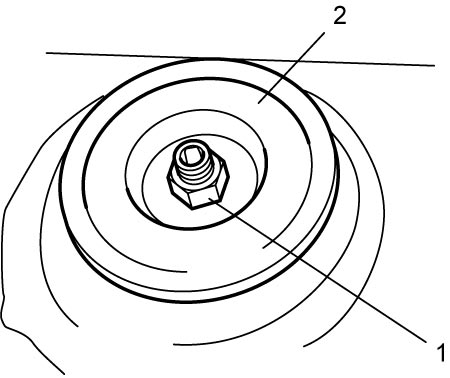
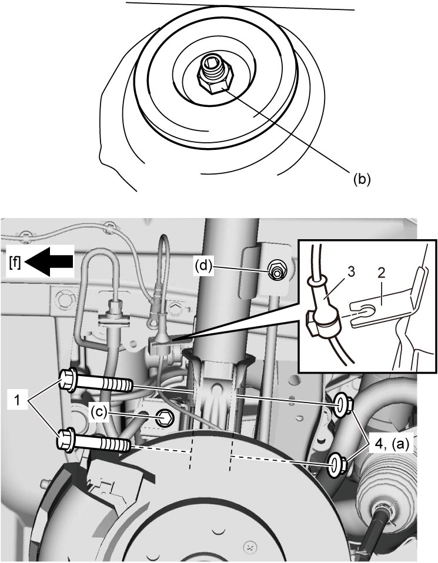

2B
| Front Strut Assembly Removal and Installation |
NOTICE:
The strut bracket nut is pre-coated with friction stabilizer. If the nut is reused, it may work loose.
Never reuse the strut bracket nut.
NOTE:
Pulling steering knuckle outward with drive shaft fixed to steering knuckle could cause drive shaft to be removed from transaxle.
Do not pull steering knuckle outward.
If drive shaft is removed, replace drive shaft snap ring with new one.
Removal
1)Remove strut rod cap.
NOTE:
When servicing strut assembly components, loosen strut support upper nut a little before removing strut assembly. This will facilitate service work. Note that the nut must not be removed at this point.
2)Hoist vehicle, allowing front suspension to be free of vehicle weight.
3)Remove front wheel. 
4)Remove stabilizer joint nut while holding stud using hexagon wrench (2) and then disconnect stabilizer upper joint (1) from strut (3).


 "Expand image")
5)Remove brake hose mounting bolt (1) to detach brake hose (2) and front wheel speed sensor harness (3) from front strut (4) as shown in figure.
6)Remove strut bracket nuts (5) and bolts (6).

 "Expand image")
7)Remove strut support upper nut (1) and rebound stopper (2), and then remove front strut assembly from vehicle.
NOTE:
Hold strut assembly by hand so that it will not fall off.

 "Expand image")
Installation
Reverse removal procedure noting the following points.
•Insert strut bracket bolts (1) in the direction shown in figure.
•Use new strut bracket nuts (4).
•Tighten all fasteners to specified torque.
Brake hose mounting bolt (c): 26 N·m (2.7 kgf-m, 19.5 lbf-ft)
Stabilizer joint nut (d): 50 N·m (5.1 kgf-m, 37.0 lbf-ft)
•Lower hoist with vehicle in unloaded condition, and then tighten strut support upper nut to specified torque.
•After completing installation, check front wheel alignment.
•Use new strut bracket nuts (4).
•Tighten all fasteners to specified torque.
Tightening torque
Strut bracket nut (a): 140 N·m (14.3 kgf-m, 103.5 lbf-ft)Brake hose mounting bolt (c): 26 N·m (2.7 kgf-m, 19.5 lbf-ft)
Stabilizer joint nut (d): 50 N·m (5.1 kgf-m, 37.0 lbf-ft)
NOTE:
•Tighten wheel bolts to specified torque.
•Do not twist brake hose and front wheel speed sensor harness when installing it.
•Install front wheel speed sensor harness by fitting its grommet (3) on hook of bracket (2).
•Install front wheel speed sensor harness by fitting its grommet (3) on hook of bracket (2).
•Lower hoist with vehicle in unloaded condition, and then tighten strut support upper nut to specified torque.

 "Expand image")
| [f]: | Forward |